Tailwind Copilot
A marketing assistant that tells small business owners what to post and when, so growing their business stops feeling like guesswork.

A copilot that turns "I don't know what to post" into a daily plan
Tailwind is a social media tool for small business owners who don't have a marketing team. It handles the basics, designing, scheduling, and publishing across channels, plus a hashtag finder, a shoppable bio link, and post-time suggestions.
Copilot was a new 0-to-1 product built inside it: an assistant that hands each owner a marketing plan tailored to their business, so they always know the next move.
Small businesses have the passion. They don't have the marketing team.
Big companies hire people to figure out what sells. Small owners can't. They have the product and the drive, but not the know-how to get it in front of the right people.
That's who we designed for. For her, marketing is one more thing that never makes it to the top of the list.
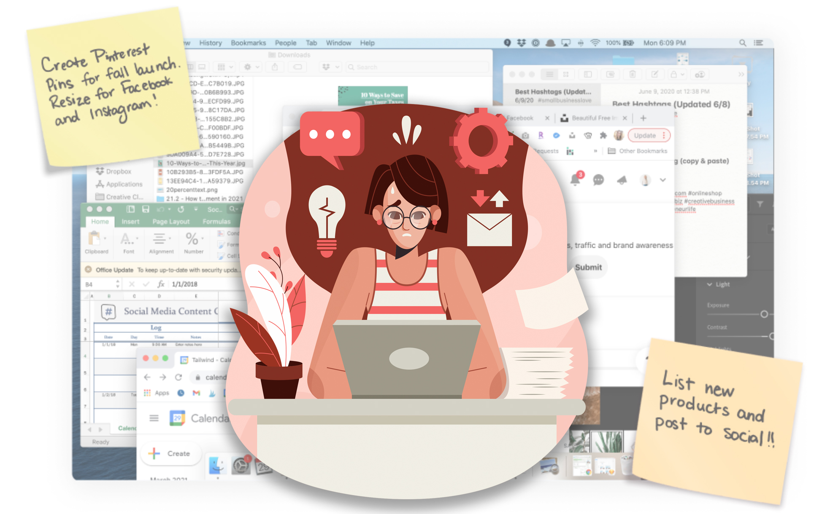
- No idea what to post
- No time to design or schedule it
- Needs results now, with no clear sense of what actually works
- No plan, just guessing
What we were aiming for
Help people with zero marketing background grow their business, using a plan specific to them with steps they can actually follow.
Make Tailwind easier to discover, try, and adopt, and open it up to owners who are just starting to think about marketing at all.
Tell people what to post, and when
Research turned up a gap nobody was filling: no tool told owners the specific thing to post on a specific day. Copilot does that. It builds a personalized plan that takes the guesswork out, so owners can spend their time making a good product instead of second-guessing their feed.
From survey to published post
Personalize
A short survey asks about the owner's business and how much marketing they've done before, then builds a plan around the answers. An overview walks them through how it maps to their goals.

Browse
The plan breaks down into daily tasks: a deck of prompt cards, each with a post idea, a short why, visuals, and a CTA. Scheduled prompts drop into a calendar that lays out the week and makes it easy to keep going.

Execute
From a prompt, the owner can jump into design or go straight to publishing, with a mini prompt card guiding them. Once something's scheduled, a quick recap surfaces the next task so momentum doesn't stall.
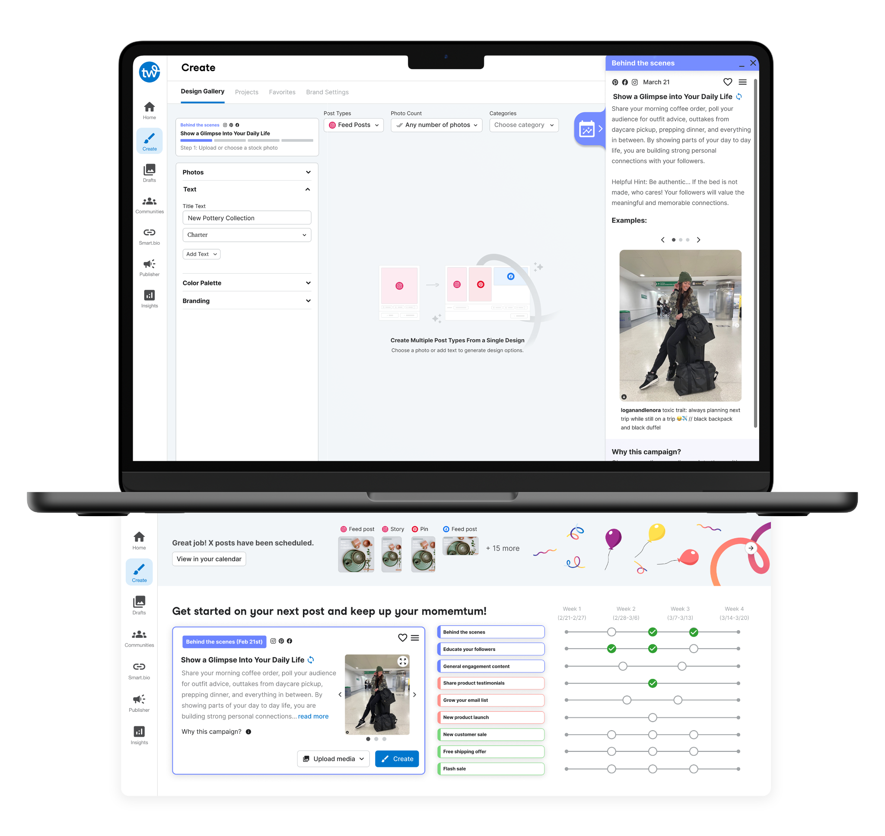
Track & adjust
A plan timeline lets owners see progress and change course once they've tried a few things. The plan stays theirs instead of a fixed script.
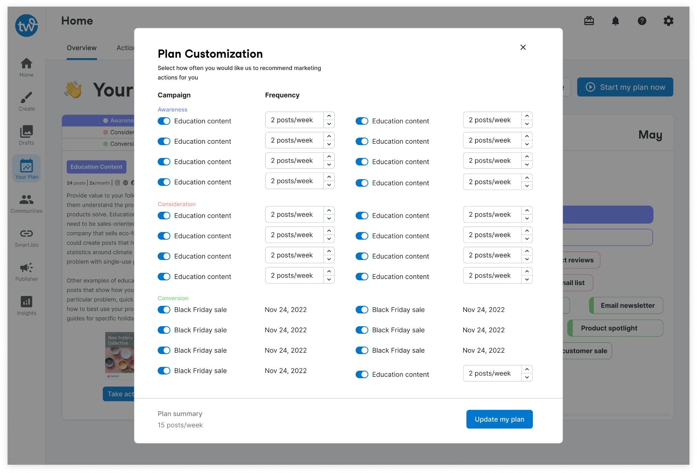
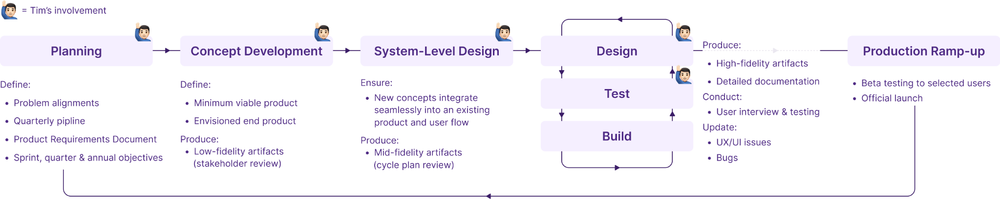
Macro flow
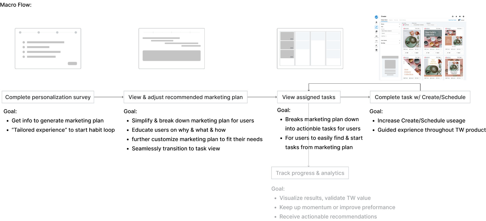
Early iterations
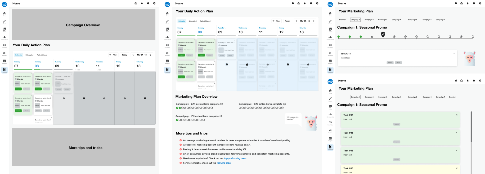
Three problems worth getting right
Two very different users
Interviews showed two patterns: people who want to do the one thing for today and be done, and people who want to run ahead and knock out a week at once. We'd built only for the first, one time-sensitive prompt at a time, to keep things calm. To serve the second without wrecking that calm, I added a way to work through several tasks in a sitting: a card deck for focus, an interactive timeline for the people who wanted to steer.
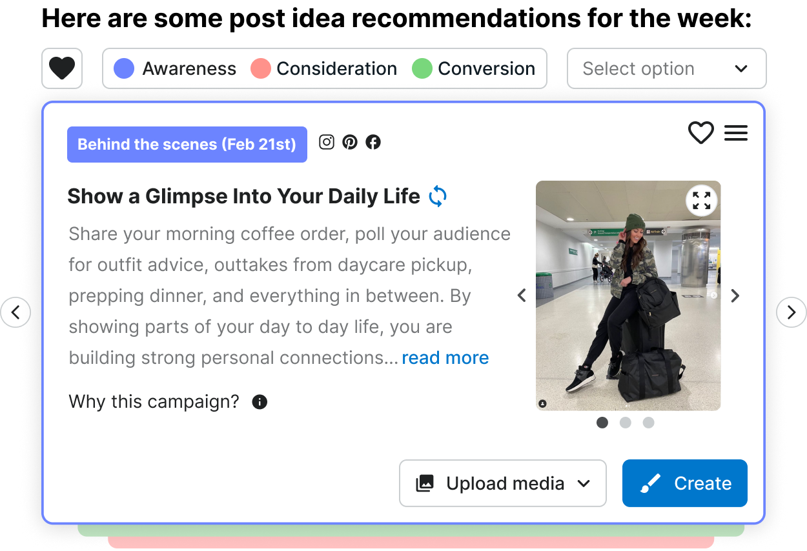
Case 1: The card deck surfaces the single most important task and keeps everything else out of the way.
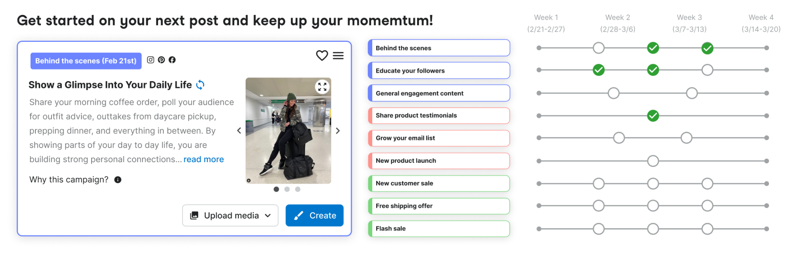
Case 2: The interactive timeline lets users browse ahead and pick what they want to work on.
Making it feel like one product, not a bolt-on
We shipped Copilot first as a standalone feature, partly to see if anyone wanted it. That isolated version taught us a lot: how people actually used it, how fast they adopted it, where the friction was. Once we knew it had legs, I folded the best parts into the core homepage Hub, so every login opens on the most important task and a clear read on the week ahead.
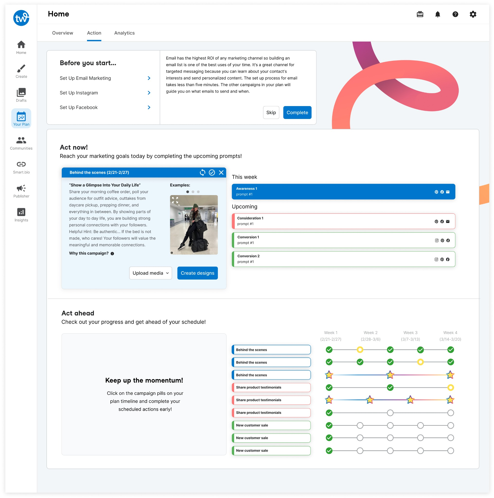
The standalone MVP let us learn adoption and friction before committing.
Those learnings shaped how Copilot got built into the Hub.
Showing just enough, not everything
A full marketing plan, funnel, campaigns, dozens of prompts, is a lot for someone doing this for the first time. Our early version listed prompts as plain titles, and people couldn't tell them apart or pick one; too many choices, not enough to go on. I switched to a card deck that shows one prompt at a time with just enough to make the call, and pushed the rest into a side panel that opens only when a card is active.
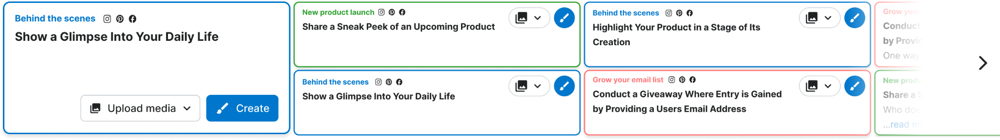
Early on, prompts were bare titles. Users couldn't tell them apart, and the choices piled up.
The card deck shows one prompt at a time with only what's needed to decide: continue, or move on.
Measured on a real rollout
We ran it as a two-week rollout to two-thirds of new sign-ups. Owners who got a personalized plan were 73% more likely to schedule their first post, and 30% more likely to upgrade.
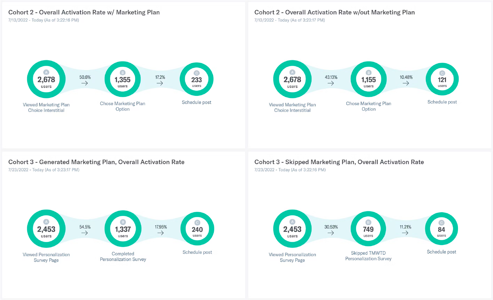
Built to grow
The current design covers organic social (Facebook, Pinterest, Instagram) and email. The underlying system is set up to extend into paid social and other channels as Tailwind grows into them.